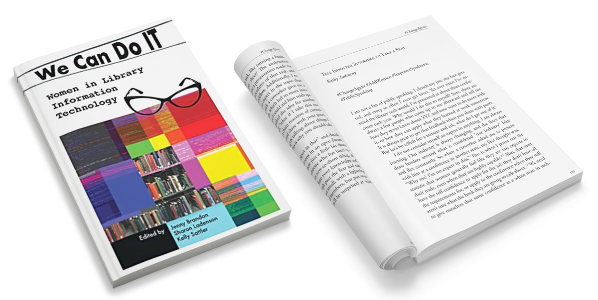
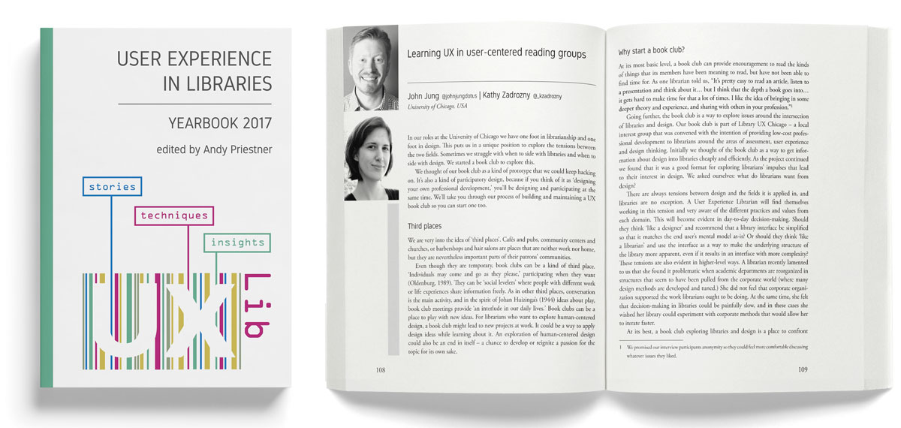

design | accessibility | community
Portfolio

The Great Escape

Induction for the 21st Century Teacher
Library Catalog, University of Chicago

Union Mission

People to People
Resume
Experience
Web Developer and Graphic Design Specialist
University of Chicago Library | May 2015 - present- Responsible for the graphic design, coding, development, and ongoing maintenance of the Library's web pages (e.g. public web sites, digital collections, staff intranet)
- Lead web accessibility projects and ongoing ADA upgrades for all Library print and digital platforms
- Train and organize training series for staff on Library web platforms, presentation standards, and social media techniques
- Supervise print and digital promotion and event campaigns with one work study employee
Founder & Creative Director
Letter Writers Alliance Chicago, IL | 2007 - Present- Founded a membership based organization dedicated to the art of letter writing
- Conceptualized, designed, and developed an online community-based platform that has grown to reach 12,000+ worldwide members
- Manage all digital promotion, event organization, and online education
- Ongoing public lectures at Chicago Public Library, Read/Write Library, and Forest Park Public Library
Independent Creative Director & Freelance Designer
2005 - 2015- Conceptualize, design, and develop brand identities across a variety of media for nonprofits, small businesses, and large corporations
- Design and code responsive websites from wireframes to completion
- Define strategies for creative campaigns applied to both print and digital media
- Select clients include: The Land of Nod—a national store for children's furniture and apparel, Union Mission—a Savannah-based homeless shelter, and Leslie Parry—a Chicago-based author
Senior Designer & Director of Web
Spring Air Company Chicago, IL | 10/2005 – 9/2006- Designed print, television, and web materials for Spring Air and its brands
- Maintained all web and internet applications, including an online shop for wholesale merchants
- Worked with PR department to create brand identities and promotional materials
Art Director & Graphic Designer
The Well Advertising Chicago, IL | 2/2004 – 5/2005- Implemented concepts, design, and art direction for all print and web material
- Handled market research, brand strategy proposals, and client proposal presentations
- Responsible for developing brand identity, packaging, and in-store promotions
Graphic Design Intern
Zegers DDB Worldwide Santiago, Chile | 8/2003 – 11/2003- Designed print material and in-store signage for Burger King's South American locations
- Aided in catalog design and English translations of product descriptions
Publications

"Tell Imposter Syndrome to Take a Seat."
In: We Can Do I.T.: Women in Library Information Technology, edited by Jenny Brandon, Sharon Ladenson, and Kelly Sattler, Library Juice Press, July 2018.

"Learning UX in User-Centered Reading Groups."
In: User Experience in Libraries Yearbook 2017: stories, techniques, insights, edited by Andy Priestner, 108-116. CreateSpace Independent Publishing Platform, 2017.
Lectures & Workshops
- "Decoding Accessible Presentations." Library UX Chicago: From Accessibility to Inclusion, Chicago, IL. July 27, 2018.
- "Learning UX in User-Centered Reading Groups." UXLibsIII, Glasgow, Scotland, UK. June 6, 2017.
- Panel member: "Library Website Redesign." Code4Lib, Chicago, IL. April 27, 2017.
- "Using Design Fiction to Explore Near-Future User Experiences in Libraries." Academic Library Association of Ohio, Wilmington, OH. October 28, 2016.
- "Brainstorming and Prototyping Workshop." Library UX Chicago, Chicago, IL. August 19, 2016.
- "From User Testing to Prototypes: Making Observations Tangible." Designing for Digital, Austin, TX. April 6, 2016.
- "What was she pointing at when she said that?" Library UX Chicago's Web Usability Testing Pop-Up Lab, Chicago, IL. November 10, 2015.
Internships
- National Postal Musuem, Public Programs February & July 2012; September 2014
- Art Institute of Chicago, Special Collections July 2012–August 2012
- Newberry Library, Map Cataloger June 2011–June 2012
- Chicago History Museum, Archives & Manuscripts June 2008–August 2008
- Jen Library, Special Collections Department March 2007–May 2007
Skills
Sass, CSS, Python, HTML, XML, and JavaScript. Adobe CreativeSuite and Microsoft Office Suite. Practiced in SQLite, JQuery, Git, Heroku, and SEO. Trained in MARC, EAD, DACS, CDWA, TEI, PREMIS, and Dublin Core.
Education
- Master of Library & Information Science, University of Illinois
- Master of Arts, Art History, Savannah College of Art & Design
- Bachelor of Fine Arts, Graphic Design, Savannah College of Art & Design
About

Specializing in user interfaces and accessibility Kathy Zadrozny builds applications that serve patrons of all backgrounds and abilities. She crafts workshops and lectures that engage attendees in creating accessible communities within their work and institutions. Her lectures have taken her to worldwide conferences like Designing for Digital, UXLib, and Code4Lib.
She has published chapters in the books User Experience in Libraries Yearbook 2017: stories, techniques, insights (2017) and We Can Do I.T.: Women in Library Information Technology (2018). In her spare time she teaches code to young women through the Girls Who Code program and manages the letter writing organization she co-founded in 2007, the Letter Writers Alliance.
Kathy's projects have garnered attention from BBC World Service, NPR, RedEye, and Gapers Block. She has also been featured in the books Good Mail Day, and Craft Business Heroes.